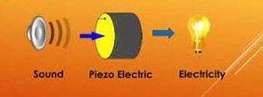

ARTHEA – AI-based LLD Generator
Hitachi Vantara (Onsite)
Jul 2025 – Present
Built Arthea, an intelligent API system that auto-generates Low-Level Design (LLD) documents from High-Level Design (HLD) inputs using Gemma-3 27B (instruction-tuned LLM). Integrated FAISS, OpenCLIP embeddings, and RAG for contextual data retrieval. Designed multiple LangChain-based chains (LDEV, Disk, Port) for structured document generation. Implemented using Python, Django REST, and SQLite, reducing manual design effort and improving technical clarity.
Jul 2025 – Present
Built Arthea, an intelligent API system that auto-generates Low-Level Design (LLD) documents from High-Level Design (HLD) inputs using Gemma-3 27B (instruction-tuned LLM). Integrated FAISS, OpenCLIP embeddings, and RAG for contextual data retrieval. Designed multiple LangChain-based chains (LDEV, Disk, Port) for structured document generation. Implemented using Python, Django REST, and SQLite, reducing manual design effort and improving technical clarity.

ServiceNow Automation & Reporting
Developed an automation solution using Python to extract and process ServiceNow ticket data for daily
operational reports. Integrated automated email notifications and dynamic Excel report generation,
reducing manual effort by over 70%. Implemented secure authentication and multi-level verification to
enhance process reliability.

Bug Tracking Dashboard
Built a Django-based web application for managing and tracking bugs with analytics capabilities.
Implemented CRUD operations, CSV bulk upload, and chart-based data visualization using Matplotlib and
Plotly. Used Django for backend and HTML/CSS/JS for frontend with SQLite
database integration.

Automation Testing – Amazon Application
Automated test cases for Amazon’s web application using Katalon Studio. Integrated with Git and Jenkins
pipelines for continuous testing and reporting. Conducted cross-browser testing through Test Cloud to
ensure platform compatibility, resulting in faster validation and improved QA efficiency.

Vehicle Number Plate Detection
Created a computer vision-based system for accurate vehicle number plate detection across varying
lighting and environmental conditions. Leveraged OpenCV and image preprocessing techniques to improve
detection accuracy.
Power Quality Improvement
Designed a power management solution integrating a shunt hybrid power filter with adaptive neuro-fuzzy
inference (ANFIS) control for harmonic reduction and performance optimization at the point of common
coupling (PCC). Enhanced power quality and reduced total harmonic distortion in real-time simulations.

Sound to Electric Energy Converter
Developed a sustainable energy model converting ambient sound vibrations into usable electrical energy
using piezoelectric microphones. Integrated a quadrupling circuit for efficient power conversion and
storage, providing an innovative green energy alternative.